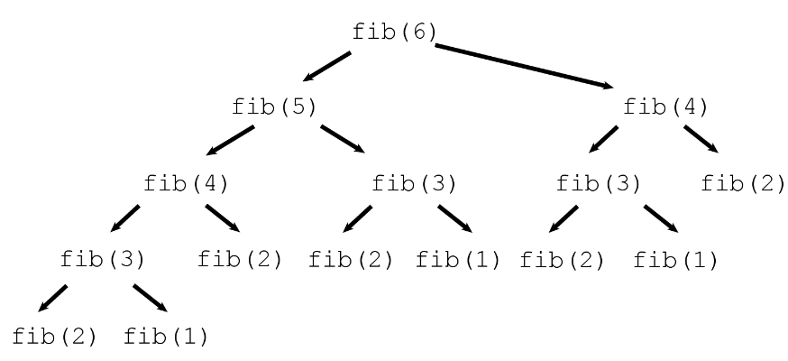

Sir Isaac Newton, the famous English scientist, once said, “If I have seen further, it is by standing on the shoulders of giants.” Of course, Newton wasn’t literally standing on the shoulders of giants. Newton was explaining that his ideas didn’t come from him alone. He relied on the ideas of those who came before him.
When coding, we mostly depend on codes written by others. These codes are often bundled together into one file or multiple files and can easily be loaded into your environment. A file containing multiple function, variables, classes etc is called a module. Often a module include codes that are related making it easier to understand and use.
Modules
The Python standard library has 295 modules, as of Python 3.12.0. These modules are divided into different categories, such as I/O, math, strings, and collections. Each module contains a set of functions and classes that can be used to perform specific tasks.
Here are some examples of the modules that are included in the Python standard library:
os: This module provides functions for interacting with the operating system.
math: This module provides functions for mathematical calculations.
string: This module provides functions for manipulating strings.
collections: This module provides classes for working with collections of data, such as lists and dictionaries.
The Python standard library is a valuable resource for any Python programmer. It provides a wide range of modules that can be used to perform a variety of tasks.
To load a library/package/module into your current work space, we use the directive import .
Some of the ways to do this are:
import module
import module as name
import module1, module2, module3
from module import class, function, another_module
from module.module import class, function, another_module, etc
from module import this as name
from module import * --- I discourage the use of this
Within these modules, we have tens if not hundreds of functions and variables. For example lets take a look at the math module
Lets try to do some simple math.
import mathmath.pi # the pi constant 3.14159265
3.141592653589793
math.cos(60* math.pi/180) # cos(60 degrees) = 0.5
0.5000000000000001
math.sin(math.pi/2) # sin(90 degrees) = 1
1.0
math.exp(1) # Eulers' constant 2.71828182
2.718281828459045
math.e # same as above
2.718281828459045
math.log(10) # log function
2.302585092994046
math.log10(100) # log to base 10
2.0
There are many more functions. Here is a code to list all the functions:
import re # for regular expressionsx = [i.ljust(10) for i indir(math) ifnot i.startswith('_')]print(re.sub("((\\w+ +){8})", "\\1\n", ' '.join(x)))
acos acosh asin asinh atan atan2 atanh cbrt
ceil comb copysign cos cosh degrees dist e
erf erfc exp exp2 expm1 fabs factorial floor
fmod frexp fsum gamma gcd hypot inf isclose
isfinite isinf isnan isqrt lcm ldexp lgamma log
log10 log1p log2 modf nan nextafter perm pi
pow prod radians remainder sin sinh sqrt tan
tanh tau trunc ulp
Don’t worry how the 2nd part of the code works, Just note that we were able to filter all the function in the first part using list comprehension and we used the string methods startswith and ljust for filtering. Hope you recall these functions from lecture 1. If not try to type help(str.ljust) on your console and it should give you a hint on what ljust does. ie left adjust.
We could go ahead and implement all these functions from scratch. But that wont be of use since our functions wont be as efficient/fast as the already optimized functions provided. The implementation might just be an exercise to understand how to code. But in case we need to use a function, we need to know what module contains the function. Some functions are embeded 2 or even three layers deep. ie a module within a module within a module. It quickly becomes difficult to remember all the modules that contain the needed function. This is where google becomes your friend. If unable to find what you are looking for, you will be forced to code from scratch, and thats why you need to learn how to write even simple function as sin.
The truth is, with over 295 packages in the standard library and over 450,000 packages (as of may 2023), its with certainity that the optimized version of the function you are looking for exists somewhere out there. But you might end up not finding it. So you need to learn to code. Practice will be your best teacher.
User Defined Functions
A function is a callable object containing multiple interrelated statements that are run together in a predefined order every time the function is called to produce a desired result or even side effect. Functions can be built-in or be user-defined. The main purpose of creating a user-defined function is to optimize our program, avoid the repetition of the same block of code used for a specific task that is frequently performed in a particular project, prevent us from inevitable and hard-to-debug errors related to copy-paste operations, and make the code more readable. A good practice is creating a function whenever we’re supposed to run a certain set of commands more than twice.
Creating a Function
While applying built-in functions facilitates many common tasks, often we need to create our own function to automate the performance of a particular task. To declare a user-defined function in python, we use the keyword def. The syntax is as follows:
def function_name(parameter1, parameter2, ...):
function body
return value
Above, the main components of a function are: function name, function parameters, and function body.
Function Name
This is the name of the function object that will be stored in the globals object after the function definition and used for calling that function. It should be concise but clear and meaningful so that the user who reads our code can easily understand what exactly this function does. For example, if we need to create a function for calculating the circumference of a circle with a known radius, we’d better call this function circumference rather than function_1 or circumference_of_a_circle. (Side note: While commonly we use verbs in function names, it’s ok to use just a noun if that noun is very descriptive and unambiguous.)
def hello():print("hello world")hello()
hello world
Function Parameters
Sometimes, they are called formal arguments. Function parameters are the variables in the function definition placed inside the parentheses and separated with a comma that will be set to actual values (called arguments) each time we call the function. For example:
The function body is a set of commands below the function header that are run in a predefined order every time we call the function. In other words, in the function body, we place what exactly we need the function to do:
def std(x): n =len(x) mu =sum(x)/n variance =sum((i - mu)**2for i in x)/(n -1)return variance**0.5std(range(10))
3.0276503540974917
While print displays the information on the screen, return ensures we receive a value back which can further be used in other manipulations. A function in python must return a value. If the return statement is not used, the function implicitly returns None. Note that with print we are not able to access what is displayed, neither can we reuse the displayed information. On the other hand, return gives back a result to the user. That is to say we can store the value into a variable and reuse it.
Passing Arguments
When we call a function, we can pass the arguments by position or by name. Passing by position simply means that the argument occupying a specified position will be treated as the parameter that occupied that position during function definition. On the other hand passing by name means the arguments will be matched to their corresponding names
eg
def surface_area(h, r):return2* math.pi * r * (r + h)surface_area(10, 7) # position 1:h=10, position 2:r=7
747.6990515543707
surface_area(h=10, r=7)# passing by name
747.6990515543707
surface_area(r=7, h=10)# passing by name
747.6990515543707
Notice that when passing by name and position, all positional arguments must come BEFORE named arguments. At the same time, we can only name parameters which do not occupy their respective position
surface_area(h=10, 7)
positional argument follows keyword argument (<string>, line 1)
surface_area(7, h =10)
TypeError: surface_area() got multiple values for argument 'h'
Return Statement:
Used only within the context of a function and thus cannot be used outside of a function. It returns the last value evaluated.
The return statement can also be used to short-circuit a function. ie The function will run statements until it meets the return function and everything else afterwards will be ignored. This can be used to quickly solve issues. For example, assume you have a function that only works with positive numbers. If the number is negative, there is no need to continue. Just return nan or any default value.
def doubled_sqrt(x):if x <0:returnfloat('nan')return (2* x)**0.5doubled_sqrt(-3)
nan
doubled_sqrt(4.5)
3.0
Note that I did not have to use else statement. Though the results will be the same, it is easier to see that the function is short-circuited the moment a number less than 0 is encountered. The statements beneath this return statement are not evaluated.
Fun fact: All the logical operators in all languages are short-circuited. eg, we know that True or …. will return True. Since the first part of the logical or operator has been evaluated to True, there is no need to evaluate the second part of the or operator. Similarly we know that False and … will return False, there is also no need to evaluate the second part of the expression. Thus both or and and are short-circuited.
Tpying: Support for type hints.
Since version 3.5, python added the idea of support for type hints. Although function and variable type annotations are not enforced, they can be used by third party tools such as type checkers, IDEs, linters, etc.
For typing we write the type of the parameter to be passed immediately after the parameter separated with a colon, while the return type is hinted at the function header before the colon. ie
def function_name(param1 : type, param2 : type, ...) -> return_type:
function body
return value
Example: Function below takes in a string, and returns a string.
def greeting(name: str) ->str:return'Hello '+ name
In the function greeting, the argument name is expected to be of type str and the return type str. Subtypes are accepted as arguments.
Sometimes the type is a bit long. eg Lets write a scaling function
def scale(scalar, vector):return [scalar * num for num in vector]
To write the same with type hints we could do:
def scale(scalar: float, vector : list[float]) ->list[float]:return [scalar * num for num in vector]
This becomes tedious. we can thus assign a type alias and use that instead
Vector =list[float]def scale(scalar: float, vector : Vector) -> Vector:return [scalar * num for num in vector]
Another way to define the type is to explicitly use the TypeAlias statement:
TypeAlias : Vector = list[float]
from typing import TypeAliasVector : TypeAlias =list[float]def scale(scalar: float, vector : Vector) -> Vector:return [scalar * num for num in vector]
You may find yourself needing to declare more than one type in a function. In that case, use union types by the use of | operator.
from typing import Mappingx : list[float] = [] # list of floatsy : tuple[str] # tuple of stringsz: Mapping[str, str|int] # dictionary keys being strings and values either floats or strings.
Lambda Functions.
These are small anonymous functions. The lambda functions are often used within other functions. Once they have been used, they cannot be reused as they are not stored anywhere in memory. These functions need to be short, precise and only contain one executable statement. They are often used within other functions such as map, reduce, accumulate, groupby, sortedmax etc. They are created by the keyword lambda Examples:
Lets say we want to sort the above but weith the notion that even numbers are trated as smaller than odd numbers.That is first order all the even numbers, then order the odd numbers. ie we want to get [-2, 4, 8, 12, -7, 1, 3] We sort all the even numbers, then we sort all the odd numbers: We could do
sorted(list_one, key =lambda x: (x%2, x))
[-2, 4, 8, 12, -7, 1, 3]
From this sorted list, the max should be 3 ie. The last value of the sorted list.
To directly obtain the max without sorting first, we could use the function max with the same key:
max(list_one, key =lambda x: (x %2, x))
3
This is a simple example to showcase the use of lambda. You could define your max the way you want and be able to obtain it from an iterable.
Although lambda functions aare generally used within other functions, sometimes they are named and thus not anonymous. This is when the same function will be used in various places.
These are functions that either directly or indirectly call themselves. This technique is called recursion. These functions need to have a way of exiting the recursion which is usually provided by the conditional control flows. These functions are often used whenever there is a Recurrence Relation.
So we can see that this is a function that can be expressed in a recursive manner. The following will be an R code for the function:
def factorial(n : int) ->int:if n in {0,1}:return1return n * factorial(n -1)
factorial(4)
24
But How does this work? Lets include some cat/print to see what happens in the function:
def factorial(n):print("Inside function:\t n =", n)if n in {0,1}: result =1print("Inside the if statement: result: 1")else: result = n * factorial(n-1)print("Inside else statement:\t n =", n, "result:",result)print("finish function: \t n =",n,"result:",result)return result
factorial(4)
Inside function: n = 4
Inside function: n = 3
Inside function: n = 2
Inside function: n = 1
Inside the if statement: result: 1
finish function: n = 1 result: 1
Inside else statement: n = 2 result: 2
finish function: n = 2 result: 2
Inside else statement: n = 3 result: 6
finish function: n = 3 result: 6
Inside else statement: n = 4 result: 24
finish function: n = 4 result: 24
24
From the printing above, we can see that the function goes all the way until it solves the smallest problem, then unwraps. ie: Notice that the last number to be multiplied is 4 and not 1.
Fibonacci Sequence:\(F_n = F_{n-1} + F_{n-2}\) where \(F_0 = 0\) and \(F_1 = 1\)
Now the Python code will be:
def fib(x):if x ==0:return0elif x ==1:return1else:return fib (x-1) + fib(x-2)
fib(6)
8
Recursions enable us break down problems easily. It is like induction. If it works for 1 then we just call the function on itself to work for 2 and so on. The question however is, does recursion efficiently solve the problem? For example lets take a look at how fib(6) is computed

This tree illustrates which calls to fibonacci (fib in the image) make recursive calls. Note that fib(4) get called twice, fib(3) three times, fib(2) 5 times, and fib(1) 3 times. That is a lot of wasted effort!
Can we do better? For this particular problem, we can do better. For other problems, we might not be able. Notice that a better recursion invokes memoization ie Tail recursions and or ensuring that there is at most one recursion call per depth. Of course all the recursions can always be turned into one of the loops provided.
def fib2(x): a, b =0, 1for i inrange(1, x): a, b = b, a + breturn b
fib2(6)
8
Using Tail Recursion:
def fib_tail(x, a =0, b =1):if x ==1: return breturn fib_tail(x -1, b, a + b)
Note that the first fib function could not solve the \(50^{th}\) Fibonacci number. The other two methods can go as high as you want. There is a limit with the tail_recursion as the maximum recursion depth in python is set to 1000. You could change that if you want, although that is risky.
import syssys.getrecursionlimit()
1000
sys.setrecursionlimit(limit = n)
Indirect Recursion
At times a function call itself indirectly. In that it calls another function that in turn calls the function in question. The indirect call can be long. Lets just look at a simple example:
{python}
def is_even(n):if n !=0: return is_odd(n -1)returnTruedef is_odd(n):returnnot is_even(n)
is_even(20)
True
is_even(31)
False
is_odd(31)
True
Notice that in the definition of is_even we call is_odd function, which in turn calls the is_even function. Thus a recursion is created. Of course this is the worst case scenario of testing whether an integer is even. Notice that for the function to return anything, it must go through all the numbers between 0 and n. ie To check whether 5 is even, we call is_odd(4) which in turn calls is_even(4) which in turn calls is_odd(3) ie unwrapping all the way to 0. Then once we get the result of 0 we start wrapping back all the way to 5. Notice that this is way too complicated that simply testing as to whether the remainder of the number when divide by 2 is 0. Its just fun for learning.
With recursion, always start with simple implementation. Break down the problem into a simpler problem of the same kind. In this case you will be able to get the stopping criteria. Before writing the whole recursion, try solving the problem for one case, then two cases. Then you can do the recursion.
Generator Functions:
This is a function that produces a result on demand rather than solving the entire task in memory. A generator function is a special type of function that allows you to create an iterator. Instead of returning a single value using the return keyword, a generator function uses the yield keyword to yield a sequence of values one at a time. This makes it possible to iterate over a potentially large sequence of values without storing them all in memory at once, which can be very memory-efficient.
def countdown(n):for i inrange(n, 0, -1):yield i
In this example, the countdown function generates a sequence of numbers from n down to 1. You can use it like this:
for i in countdown(5):print(i)
5
4
3
2
1
When you call countdown(5), it doesn’t immediately generate all the numbers from 5 to 1. Instead, it creates a generator object, and each time you iterate over it, the yield statement produces the next value in the sequence. This is much more memory-efficient than generating the entire sequence and storing it in memory.
Calling a generator function creates an generator object. However, it does not start running the function. The function only executes on next(). Yield produces a value, but suspends the function. Function resumes on the next call to next(). In short, when the generator returns, the iteration stops.
Generator functions are commonly used in Python for tasks such as reading large files line by line, generating an infinite sequence of values, or processing data in chunks to conserve memory. They are an essential part of Python’s support for lazy evaluation and can be created using generator expressions as well.
Note that once the generator has been consumed, there will be no more elements and thus will be empty.
a = countdown(3)list(a)
[3, 2, 1]
list(a)
[]
The first time we printed a, there were 3 elements in it. The second time we printed a there were no elements in it. What happened?
This is because of what generators are: a way to output a sequence of values without holding the sequence in memory. Therefore, there’s no backward traversal. You cannot refer back to the sequence once you have traversed it.
We could use the function next to obtain the current position of within the generator.
a = countdown(3)next(a)
3
next(a)
2
next(a)
1
With this, we could be able to represent infinite sequences, infinite cycles and loops etc.
For example:
def pi():sum=0 i =1.0; j =1whileTrue:sum=sum+ j/iyield4*sum i = i +2; j = j *-1
a = pi()
The generator a above converges slowly to the value of pi.
generators could also be used in infinite recursions. etc
While we have list and dict comprehensions, tuples output a generator. a generator expression will be like shown below.
(i for i inrange(5))
<generator object <genexpr> at 0x000001E091439FF0>
As this is a finite generator, we could simple list/sum etc. Note the example below whereby we directly summed the generator produced without listing it first.
sum(x**2for x in [1,3,5,4])
51
In case you are facing memory issues, your best option is to use generators rather than normal functions.
So far we have been dealing with functions with a predefined number of parameters.
What if you do not have a definite number when writing a function. What should you do?
Python provides a way to deal with this. In Python, *args and **kwargs are two special keywords that allow a function to accept a variable number of arguments. *args is used to accept variable number of positional arguments, while **kwargs is used to accept a variable number of keyword arguments.
*args is typically used in functions that need to accept a variable number of positional arguments. For example, the following function can be used to print a variable number of numbers:
def print_numbers(*nums):for num in nums:print(num)
The above function can be called as follows:
print_numbers(1, 2, 3, 4, 5)
1
2
3
4
5
**kwargs is typically used in functions that need to accept a variable number of keyword arguments. For example, the following function can be used to create a dictionary from a variable number of keyword arguments:
def create_dict(**kwargs):return kwargs
create_dict(name="John Doe", age=30)
{'name': 'John Doe', 'age': 30}
Suppose there are multiple arguments and these arguments are already in a container. How can we pass these arguments? Use the respective asterisks. ie single asterisks for unnamed arguments and double asterisks for named arguments
print_numbers(*[1,2,3,4])
1
2
3
4
create_dict(**{'name':"John Doe", 'age':30})
{'name': 'John Doe', 'age': 30}
As from python version 3.11.3, a function call from the operator module is provided:
GCD: One of the algorithms use to compute the GCD of two numbers is the Euclidean Algorithm. Write a recursive function named gcd(a,b) that finds the gcd between two numbers a and b using the Euclidean Algorithm.
For example, to compute gcd(48,18), the computation is as follows:
LCM: Using the relationship \(\displaystyle \operatorname {lcm(a,b)={\frac {|ab|}{\gcd(a,b)}}}\) . write a function named lcm(a, b)
Taylor Series: Defines a function as an infinite summation expressed in terms of the function’s derivatives at a single point. These are often polynomial in nature:
b. The log(x) . Name the function my_log_restricted. Restrict the domain of the function to be \(0.2\leq x\leq 2\). ie if x is not in the interval, it should output NA
c. The sin(x). Name the function my_sin. Note that sine function is defined for all x yet the result will be constrained to \([-1,1]\) . Thus ensure to scale your x to fall within a circle. ie \(x ~(\operatorname{mod} 2\pi)\)
Significant digits: Given a value 23456 we can represent it as \(2.3456\times 10^4\) where 4 is the number of significant digits with base 10. 4 is obtained by continuously dividing the number by 10 until the number itself is within the interval \([1,10)\) ie \(1\leq x<10\) .Thus the number must be strictly less than 10. For any other base, we divide by that base until the number is within the interval \([1, \operatorname{base})\). Using any of the methods above write a function signif_digits(x, base) that will return the significant digits of a number. eg signif_digits(23456, 10) = 4 and signif_digits(0.00234, 10)=-3
Write a recursive function digit_sum(n) that takes a nonnegative integer and returns the sum of its digits. For example, calling digit_sum(1729) should return \(1+7+2+9\) , which is 19 .
The recursive implementation of digit_sum depends on the fact that it is very easy to break an integer down into two components using division by 10. For example, given the integer 1729 , you can divide it into two pieces as follows:
Each of the resulting integers is strictly smaller than the original and thus represents a simpler case.
The digital root of an integer \(n\) is defined as the result of summing the digits repeatedly until only a single digit remains. For example, the digital root of 1729 can be calculated using the following steps:
Step 1: \(1+7+2+9 \rightarrow 19\)
Step \(2: 1+9 \rightarrow 10\)
Step 3: \(1+0 \quad \rightarrow \quad 1\)
Write a recursive function digital_root(n) that obtains the digital root of an integer n
Logarithms:
For any value \(x>0\) the \(\log(x) = \log(a\cdot 10^b)=\log(a) + b\log(10)\) where \(a\cdot10^b\) is the scientific notation fo any number. Recall, \(1234 = 1.234\times 10^3\). Using your function my_log_restricted and signif_digits and Given that \(\log(10)=2.302585092994045684017\) write a function named my_log_using10 that computes the natural logarithm of any real number x.
Computers do not use base 10 ie numbers 0-9, but rather use base 2 ie numbers 0 and 1. In the above notation on algorithm, we used a base 10. In base 2, \(\log(x) = \log(a\cdot2^b) = a + b\log 2\) . Note that \(b\) can be computed iteratively and \(\log 2\) is a constant that can be stored in the computer. Using your function my_log_restricted and signif_digits and given that \(\log(2)=0.6931471805599453094172\) write a function named my_log_using2 that computes natural logarithm of any real number x
(Hard) log base 2 As we have established, computers use base 2. Hence the logarithms are computed in base 2. Read through the link to understand on how \(\log_2(x)\) is approximated. Using the first 100 terms, write function my_log2 that computes the logarithm to base 2 of any real number x
Root-Finding Algorithm (Newton-Raphson):
The Taylor Series can be used to iteratively approximate the zero of a function. Suppose you are asked to find the value of \(x\) such that \(f(x) = 0\), Then using the first 2 terms of the Taylor series we have:
\[ \begin{aligned} f(x) &\approx f(a) + f'(a)(x-a)\\ x &\approx a + \frac{f(x) - f(a)}{f'(a)}\\ x &\approx a - \frac{ f(a)}{f'(a)}\quad\text{Since} f(x) = 0\\ \end{aligned} \]
Starting from a value \(x_0=a\) one can iteratively approximate what the value x is by using the equation:
\[ x_{n+1} = x_n - \frac{f(x_n)}{f'(x_n)} \]
Example: Suppose I want to solve for \(x^2 - 3=0\) we get the following steps: \(f(x) = x^2 - 3,\quad f'(x) = 2x, \quad \text{Let's take }x_0 = 1\) Then we have
Note that after only three iterations we are close to the solution ie \(\sqrt{3}=1.732051\). We should continue until the absolute difference between two successive iterations is less than a chosen tolerance. eg \(\left|x_n -x_{n-1}\right| < 1e-6\) then we stop.
Iteratively solve for \(x\) in the following problems:
Write a function my_sqrt1(x) which obtains the square root of a non-negative real number using newton raphson. Use the function to find the solution to \(\sqrt{13}\)
We could use root finding approach to solve the problem of logarithms. ie to find the zero of a logarithm function. eg \(\log(x) = y\) . Using Newton Raphson algorithm, write a function named my_log_newton that takes one parameter x and outputs the value of \(\log(x)\) .
Hint: Express the problem in exponential notation. ie \(x = e^y\) . Now we are solving for \(y\) such that \(e^y - x=0\). Our function becomes \(f(y) = e^y-x\) and \(f'(y)= e^y\) . Use the previously written function my_exp to solve the problem.
(Continuation from 4 - hard): Write a function named my_optim(x0, f, fprime) that takes in 3 parameters ie \(x_0\): the starting point, \(f\) :the function to be solved and the \(f'\) : the derivative of the function to be solved.
Numerical Differentiation[1] So far, you have noticed that to solve the problems we need to differentiate the functions. But we can simply carry out a numerical differentiation in that we let the computer do the math for us. Using the first order Taylor series approximation, we have:
You have seen this before. ie in the equation of a line \(y=mx+b\) where the gradient/slope \(m\) was computed as
\[ m = \frac{y_2-y_1}{x_2-x_1}=\frac{f(x_2) - f(x_1)}{x_2-x_1} \]
This is defined as the average rate of change between two points \((x_1, f(x_1))\) and \((x_2, f(x_2))\) . What if we want the instantaneous rate of change at \(x_1\) ? We let the difference \(x_2-x_1\) go to 0. If we define \(h = x_2-x_1\) then we have \(x_2 = x_1 + h\) and we can therefore define the instantaneous rate of change at point \(x_1\) as:
I hope you have seen this severally given as the definition of derivative at point \(x_1\)
Since in the numerical world, \(h\) can never be truly 0, as we cannot divide by 0, we let \(h=1e-8\) and approximate \(f'(x)\)
Example: Find the derivative of \(2x^3-6x+3\) at \(x=2\) . Analytically the derivative is \(f'(x) = 6x^2-6\) and thus \(f'(2)=6(2^2)-6 = 18\) Numerically we would do
x =2f =lambda x: 2*x**3-6*x +3h =1e-7(f(x+h) - f(x))/h
18.000001169582447
With the information above:
Write a function my_derive(fun, x) that evaluates the derivative of function fun at x.
Write a function my_optim2(f) that uses my_derive to find the zero of f. Define \(x_0=1\)
MUST DO PROJECT
Better Fibonacci Sequence- Tail Recursion Click on the bolded link, Starting at page 185-187, read through to understand what a better implementation of Fibonacci should look like. Write an R code to implement the same. Hint: The function should take 3 parameters
Tower of Hanoi- Click on the link, Starting at page 202-211, read the problem regarding tower of Hanoi. Try writing the code in R to solve the problem. The code should not be more than 7 lines of code. Hint the function should have 3 parameters.